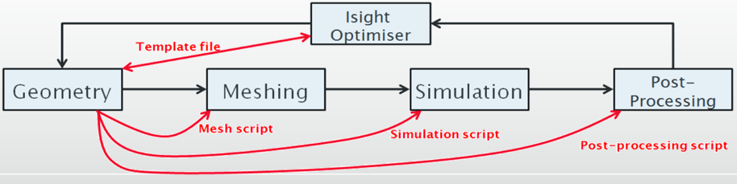
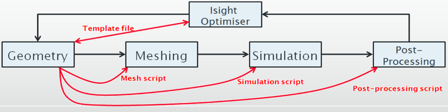
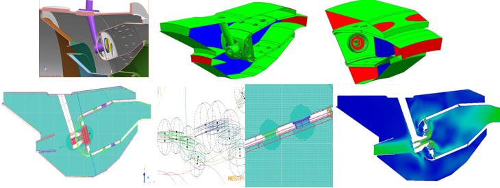
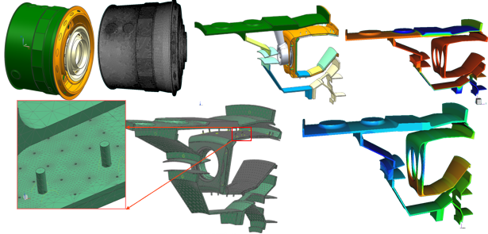
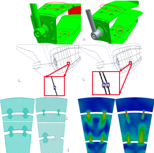
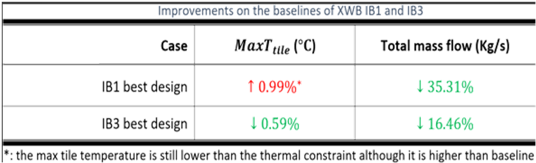
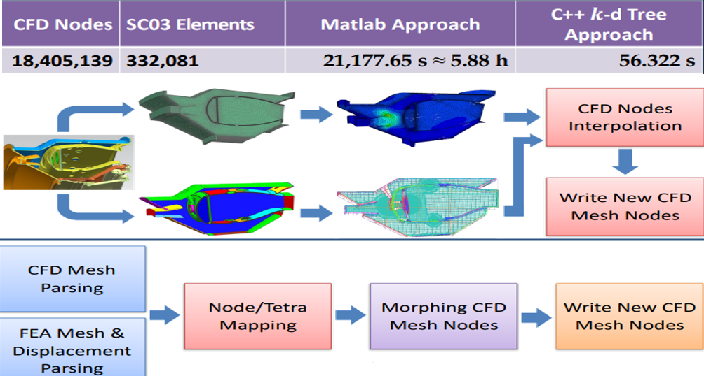
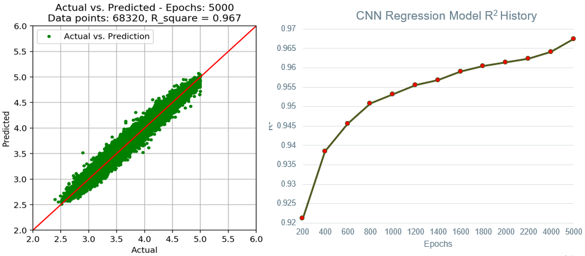

面向 几何模型 与 人工智能 的
航空发动机设计与优化
张旭 博士
2023.12.21
报告结构
- 研究背景介绍
- 核心科研成果
- 未来研究方向
研究背景介绍
- 研究领域：
- 专注于 航空发动机 各部件的 设计 与 优化 问题
- 个人专长：
- 深度参与 多个航空发动机、燃烧室、隔热瓦、喷油嘴、涡轮叶片、战斗机加力燃烧室的设计与优化项目（军用、民用）
- 科研方向：
- 人工智能与机器学习 与 航发设计 领域的交叉研究与应用
- 广泛合作：
- 业界：英国罗罗公司、空客公司、英国国防部、英国皇家空军、英国国防科技实验室、英国航天科技中心、罗罗公司全球五大研发中心（德比，布里斯托，印度班加罗尔，美国伊利诺伊，德国达勒维茨）
- 院校：剑桥大学空气动力学中心、牛津大学空气动力实验室、克兰菲尔德大学、拉夫堡大学、女王贝尔法斯特大学等
科研项目纵览
- 创新型航空 发动机燃烧室 三维 综合 设计与优化 平台
- 发动机燃烧室 智能热力学分析 系统（欧盟FP7 Clean Sky2）
- 柱基型发动机燃烧室 隔热瓦冷却孔优化 平台
- 三维 有限元模型冷热网格转换 工具
- 某新型 战斗机加力燃烧室 优化（军用）
- 发动机设计中的 人工智能与机器学习 应用
成果(1): 航发燃烧室三维设计与优化平台
- 发动机基础设计环节的 核心综合优化系统 - 普罗米修斯
- 减少人工干预，提高优化效率（罗罗公司白皮书）
- 整合研发工程师的 专家经验 与罗罗公司的 最佳实践
- 正式列装罗罗公司 核心工具库（工程软件环境）
- 部署于全球 五大研发中心 , 服务多个项目小组
- 已成功应用于 十余款 发动机的设计与优化流程
普罗米修斯: 以优化工具为中心 vs. 以几何模型为中心
传统优化流程 - 以优化工具为中心(6-8 周)

创新优化流程 - 以几何模型为中心(< 1 分钟) 
创新优化流程 - 以几何模型为中心(< 1 分钟) 
打通设计与优化流程
上下游数据流通
上下游数据流通
自适应拓扑结构变化
精简交互流程
精简交互流程
模块化设计
无限应用扩展
无限应用扩展
智能特征提取
可扩充规则库
可扩充规则库
成果(2)：发动机燃烧室智能热力学分析系统
- 欧盟FP7 €4bn 洁净天空-2 项目的成员课题
- 新！ 全自动 有限元分析 (FEA) 功能
- 新！ 全自动 气-热 与 热-声 分析网络生成
- 新！ 支持 稀薄燃烧 发动机的 流体动力学 与 热-机械力学 模拟
- 新！ 打通 西门子 NX CAD 软件 与 罗罗公司 SC03 FEA 模拟软件$\qquad\qquad\quad$
- 基于成功的 普罗米修斯 优化平台，扩展系统功能
成果展示 （1） + （2）

$^{[1]}$ Xu Zhang,et al. “Prometheus: a geometry-centric optimisation system for combustor design”, ASME Turbo Expo 2014.

$\qquad$
$^{[1]}$ Daniel Zhang. et al., “Isothermal Combustor Prediffuser & Fuel Injector
Feed Arm Design Optimisation Using the Prometheus Design System”, J. Eng.
Gas Turbines Power, (2015)
$^{[1]}$ Xu Zhang,
- 全自动气-热网络生成
- 智能细分网络划分
- 喷油嘴几何模型自适应替换
- 无须人工干预
$^{[1]}$ Daniel Zhang. et al., “Isothermal Combustor Prediffuser & Fuel Injector
Feed Arm Design Optimisation Using the Prometheus Design System”, J. Eng.
Gas Turbines Power, (2015)
成果(3)：柱基型隔热瓦冷却孔优化平台
- 罗罗公司 首个 全自动 并行 隔热瓦优化系统
- 支持 本地 与 远程 求解，灵活部署与扩展
- 可作为 即插即用组件 参与整体优化流程
- 全自动：调整冷却孔参数、完成几何约束求解、
生成气热分析网络、执行thermal-mechanical有限元仿真、$\qquad\qquad\qquad$
自动采集归档实验结果数据
成果展示 （3）
$^{[1]}$ Daniel Zhang, et al. (2017) Surrogate based design optimisation of combustor tile cooling. 2017 Gas Turbine India Conference, Bangalore, India.
优化结果经拉夫堡大学实验台采集数据验证
空客采购的某机型的发动机全部八组隔热瓦均采用此平台优化
极大的改进空气质量流率，节省燃油成本极为可观
（罗罗报告估算以百万英镑计）
空客采购的某机型的发动机全部八组隔热瓦均采用此平台优化
极大的改进空气质量流率，节省燃油成本极为可观
（罗罗报告估算以百万英镑计）
成果(4)：三维有限元模型冷热状态转换工具
- 冷热状态FEA与CFD模型 全自动 匹配 （网格精度不同）$\qquad\qquad\qquad$
- 基于FEA仿真结果 自动转换 CFD流体网格
- 可以做CFD $\iff$ FEA 闭环优化
- 模型无关，可 独立使用 也可接入 普罗米修斯 系统
成果展示 （4）
移交布里斯托 军用部门 由专人维护
$\qquad$
成果(5)：某型战斗机发动机加力燃烧室优化
- 英国国防部与皇家空军委托项目
- 普罗米修斯 优化平台全面升级，更加简洁和灵活
- 乐高积木式、即插即用型功能模块(v2)
- 实现真正的“黑箱” 系统
- 面对新模型，用户无须访问源代码
- 荣获2020罗罗公司数字先锋大奖
保密项目，无法展示结果
成果(6)：发动机设计中的人工智能与机器学习应用
- 前沿领域：AI大模型 并未成熟的用于解决工程问题
- 数据驱动：需要 庞大的 三维模型、仿真结果 数据
- 耗时：喷油嘴设计，4-5年 持续采集，2万2千余 成功收敛的CFD模拟数据
- 存储：涡轮叶片设计，约1年，上千 CFD数据，$3\times 18TB$ 大容量硬盘
- 设备：$2 \times$ $\Big($ $4 \times$ $Nvidia\> $ $A100\> (80G)$ $\> GPU \Big)$(约$£20,000/GPU$)
- 解决思路：从 二维切片 入手，简化 数据、加速 训练流程
- 结果驱动的 反向设计：发动机性能目标 $\implies$ 设计参数
- NN $\implies$ CNN $\implies$ GAN $\implies$ cGAN
- 已交付 罗罗公司使用：应用于喷油嘴、涡轮叶片、与密封圈的设计优化
成果展示 （6）
喷油嘴设计训练过程 
模型预测与真实CFD模拟的判定系数 $R^2 > 98\%$!（最新数据）
研究展望
- 通用 三维几何模型综合设计与优化平台
- 模型无关：通用、智能、规则可扩展
- 基于人工智能与机器学习的 三维 几何模型生成研究
- 数据：超大规模 三维数据库（模型+仿真结果）
- 模型：二维到三维，半自动、全自动 生成
- 工业级 的智能设计与优化系统 应用
- 大型应用：大规模部署，提高企业产能
- 产研结合：联合头部企业，设置研发项目
- 跨学科 研究，数字孪生